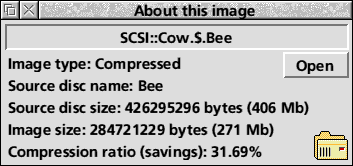

The FCFS image file icon is suggestive of a directory icon. This is deliberate since the image file has the attributes both of a directory and a file. You may copy the file about just like a normal file, however you may double click on it to open it like a directory. It works in exactly the same way as DOSFS, ArcFS or SparkFS.

If you drag an image file to the FCFS iconbar icon an information window will open which shows the type of the image, the size of the disc it was made from, the size of the image itself and the compression ratio if applicable. You may also click on the open icon to open a filer window onto the image.
FCFS has two quit options leading off "Quit" on the iconbar menu. "Filer only" and "Filer and FS". The first quits just the desktop front end - you will still be able to use the FCFS image files. The second quits the image filing system also and after that you will not be able to use the FCFS image files without reloading FCFS. Clicking on the main "Quit" option is equivalent to "Filer only".